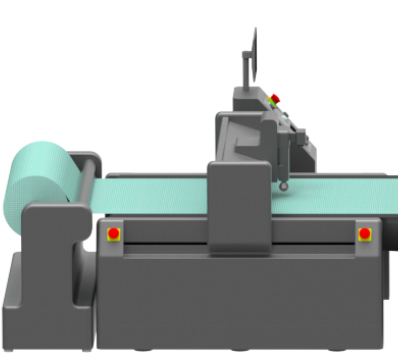
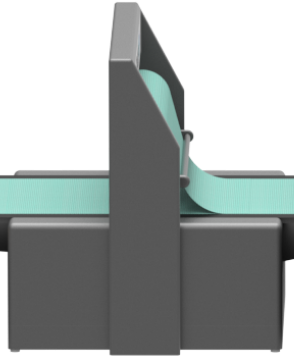
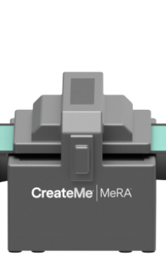
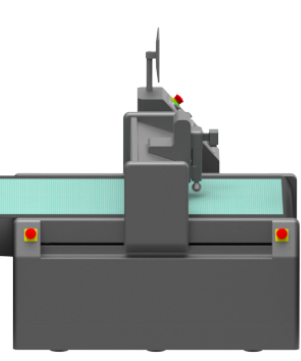
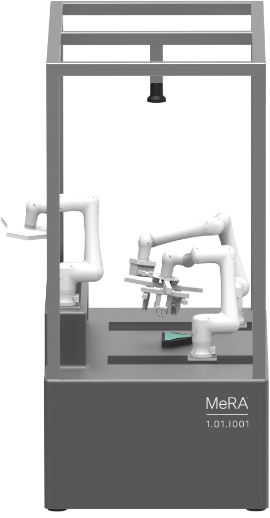

The world's first autonomous tailoring platform.
Five steps to dynamic variability and flawless precision.





Modular Engineering Robotic Assembly: 2D Forming
1: Single-Ply Digital Patterning, Pixeling, and Excising
Schedule multi-size process runs with nuanced specifications including microsizing, silhouette gradations, and macro category profiles. Parts are cut and bonded in a single step directly from a digital file.
2: Mechanically-Enabled Joinery
Soft touch pre-assembly alignment ensures high density precision for multi-layered garments without complicating production.
3: Fabric Lamination
Multi-layered fabrics are joined together via controlled heat and pressure before being cut.
4: Two-Ply Digital Patterning, Pixeling, and Excising
Partial garment assembly occurs prior to precision vision-guided cutting, resulting in minimal seam allowance while streamlining handling and transport.
3D Forming
5: Garment Specific Modules
Specialized robotics systems finalize products according to garment specific modules.